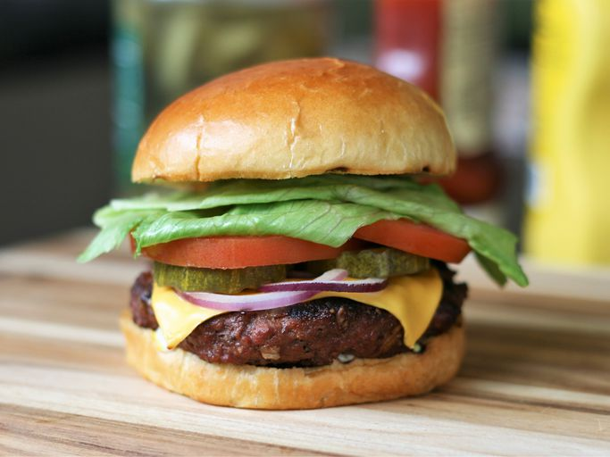

Best Burger Ever

A very healthy AND flavorful burger with
a little extra crunch.
Ingredients
- 2 pounds of extra-lean ground beef
- 1 (1 ounce) package of dry onion soup mix
- 1 egg, lightly beaten
- 2 teaspoons of hot pepper sauce
- 2 teaspoons of Worcestershire sauce
- 1/4 teaspoon of ground black pepper
- 3/4 cups of rolled oats
Steps
- Preheat an outdoor grill for medium
high heat and lightly oil grate.
- In a large bowl, combine the beef,
onion soup mix, egg, hot sauce and oats.
Shape into 6 patties.
- Grill patties over medium high heat
for 10 to 20 minutes, or to desired doneness.